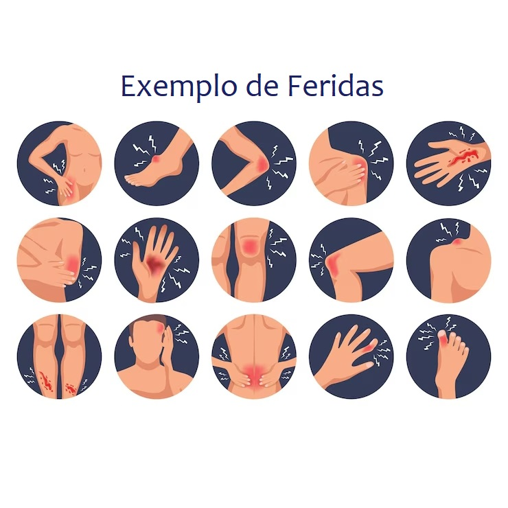

O que é uma ferida?
Uma ferida é qualquer lesão que causa a ruptura na continuidade da pele, podendo afetar camadas como epiderme, derme, tecido subcutâneo e até mesmo a fáscia muscular, expondo, em casos mais graves, estruturas mais profundas do organismo.
Como Classificar uma Ferida?
A classificação das feridas é realizada com base na probabilidade de contaminação durante o procedimento cirúrgico.